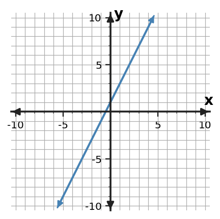
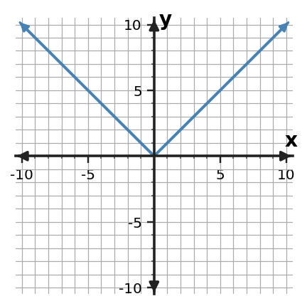
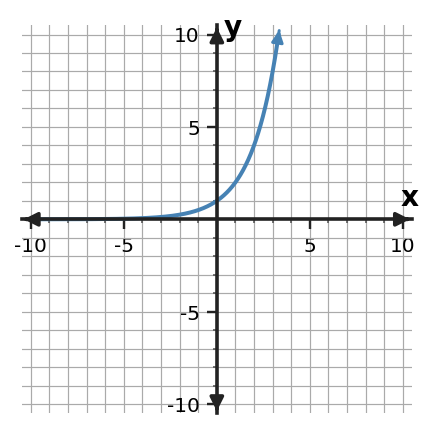

Function Family Reunion
Function Families
- Work with a partner or group of 3.
- Sort by evidence, not by guessing from one graph.
- Use at least two clues before deciding that representations belong to the same family.
- Revise your sort when new evidence makes your reasoning stronger.
The cards come from four families. The official family names are hidden at first. Sort the 16 cards into four groups of four: one graph, equation, table, and context per family.
| Temporary Family | Card Codes | Strongest Evidence |
|---|---|---|
| A | ||
| B | ||
| C | ||
| D |
Graph Cards




Equation Cards
Table Cards
| $x$ | $y$ |
|---|---|
| -1 | -1 |
| 0 | 1 |
| 1 | 3 |
| 2 | 5 |
| $x$ | $y$ |
|---|---|
| -2 | 2 |
| -1 | 1 |
| 0 | 0 |
| 1 | 1 |
| 2 | 2 |
| $x$ | $y$ |
|---|---|
| 0 | 1 |
| 1 | 2 |
| 2 | 4 |
| 3 | 8 |
| $x$ | $y$ |
|---|---|
| -2 | 4 |
| -1 | 1 |
| 0 | 0 |
| 1 | 1 |
| 2 | 4 |
Context Cards
A taxi charges \$1 to unlock the ride and \$2 more for each mile.
The output is the distance from 0 on a number line for each input position.
A rumor doubles each hour: 1 person, then 2, then 4, then 8.
The area of a square changes as its side length changes: $A=s^2$.
| Family | Graph clue | Table clue | Equation/context clue |
|---|---|---|---|
| A | |||
| B | |||
| C | |||
| D |
Choose one family and complete: These cards belong together because...
Graph Round
Which graph could be described as “different” from the others? More than one answer can be defended if your evidence is mathematical.
Claim: ______ does not belong because ________________________________________________.
Table Round
| $x=0$ | $x=1$ | $x=2$ | $x=3$ | |
|---|---|---|---|---|
| A | 3 | 5 | 7 | 9 |
| B | 1 | 3 | 5 | 7 |
| C | 2 | 4 | 8 | 16 |
| D | -1 | 1 | 3 | 5 |
Which table belongs to a different family? Use the pattern in the outputs as evidence.
Equation Round
Which equation belongs to a different family? What structural clue did you use?
Your teacher will reveal the names: Linear, Absolute Value, Exponential, Quadratic.
| Your Family | Official Name | Best clue for recognizing it |
|---|---|---|
| A | ||
| B | ||
| C | ||
| D |
A function family is...